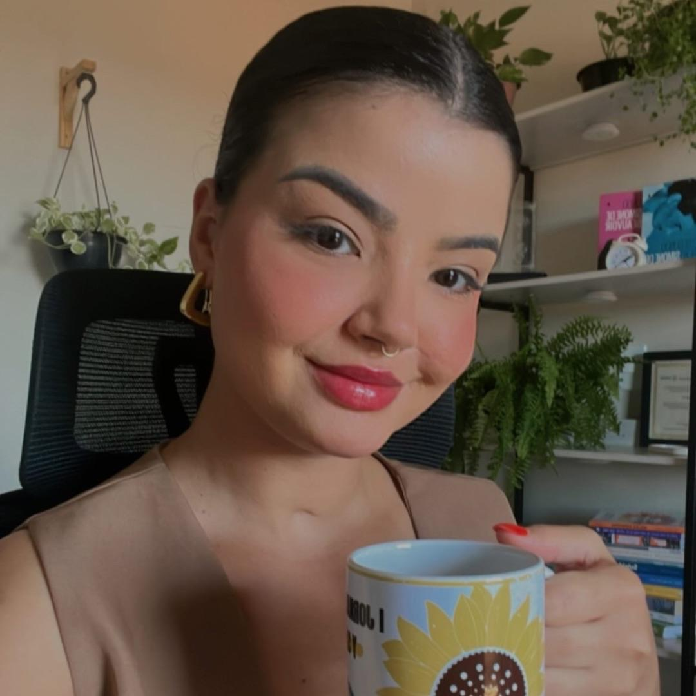

Meu objetivo principal dentro do atendimento online é estabelecer um ambiente seguro, confortável, sem julgamentos, onde o paciente se sinta acolhido, se adapte ao seu tempo e disponibilidade, sem deslocamentos ou imprevistos.
